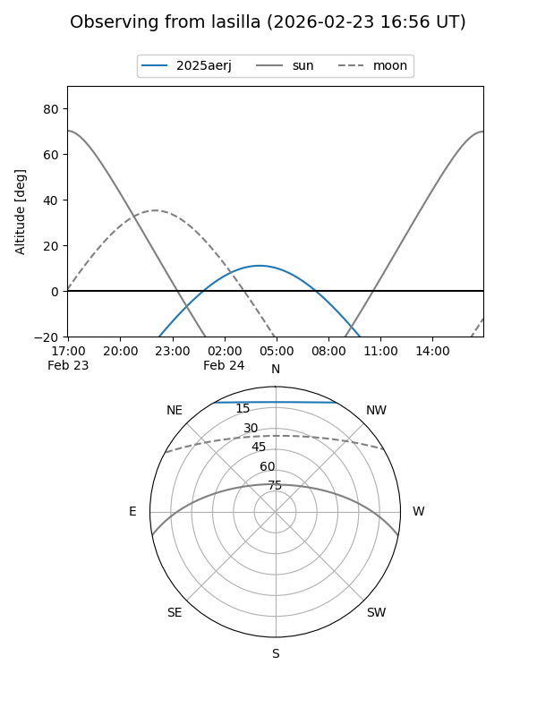
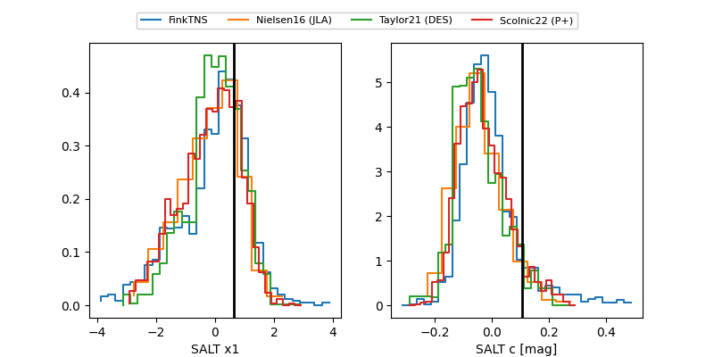

2025aerj
Target 2025aerj at 2025-12-22 18:51
Aliases and brokers:
FINK: fink-portal.org/ZTF25acelfkm
Lasair: lasair-ztf.lsst.ac.uk/objects/ZTF25acelfkm
ALeRCE: alerce.online/object/ZTF25acelfkm
TNS: wis-tns.org/object/2025aerj
YSE: ziggy.ucolick.org/yse/transient_detail/2025aerj
alt names
ZTF25acelfkm (ztf,fink_ztf)
2025aerj (tns,yse)
Coordinates:
equatorial (ra, dec) = 143.3314,+49.76342
equatorial (HMS+DMS) = 09:33:19.53,+49:45:48.30
galactic (l, b) = (168.1169,+46.15640)
Flags:
Photometry:
last atlasc=19.28, atlaso=19.34, ztfg=19.77, ztfr=20.07
1 atlasc, 2 atlaso, 5 ztfg, 13 ztfr detections
Lightcurve

Visibility


Additional plots
